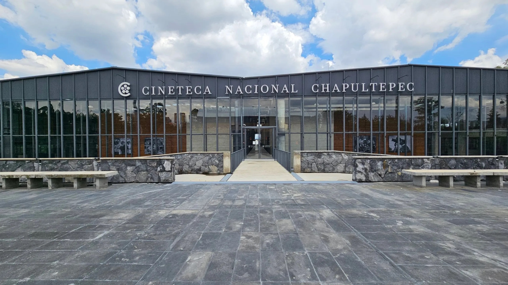

Dimensión espacial
Orientación y recorrido
Ayuda a ubicar puntos clave y a recorrer el espacio con más claridad, para que llegar, orientarse y seguir el trayecto no se vuelva una barrera.
Un sistema multisensorial que acompaña el cine antes, durante y después de la proyección: para que puedas llegar con más claridad, vivirlo con más autonomía y seguir pensándolo después.
“360” significa que el cine no se vive desde un solo recurso ni en un solo momento. Por eso, el sistema conecta distintos apoyos para que cada quien pueda encontrar su propia manera de vivirlo.
Orientación y recorrido
Ayuda a ubicar puntos clave y a recorrer el espacio con más claridad, para que llegar, orientarse y seguir el trayecto no se vuelva una barrera.
Audio, luz y estímulos
Considera cómo el sonido, la luz, las texturas y otros estímulos influyen en la manera en que cada persona percibe y vive el cine.
Comprensión y anticipación
Hace que la información sea más clara y legible, para facilitar la comprensión, anticipar lo que viene y darle más sentido a lo que se está viviendo.
Seguridad y confianza
Reconoce que también están en juego la seguridad, la confianza, la autonomía y las distintas maneras en que cada persona se relaciona con el cine.
Recursos y consulta
Reúne materiales y apoyos para que puedas prepararte, informarte y llegar con más claridad antes de la visita.
A través de cuatro componentes, Cinergia 360 amplía lo que el cine puede ser. Cada uno entra por un lugar distinto y aporta algo propio.


Cinergia 360 se desarrolla en vinculación con la Cineteca Nacional Chapultepec, un espacio para pensar, diseñar y evaluar cómo puede vivirse el cine desde una experiencia inclusiva.

Nace como un nuevo punto de encuentro con el cine en el poniente de la ciudad. Instalada en una antigua ensambladora de armas, hoy ese espacio alberga salas, archivos y recorridos. La Cineteca Nacional preserva y difunde la memoria fílmica de México, mientras Chapultepec ofrece otro acceso desde el bosque, la caminata y el espacio al aire libre.
Selecciona una opción para ver la ruta correspondiente.